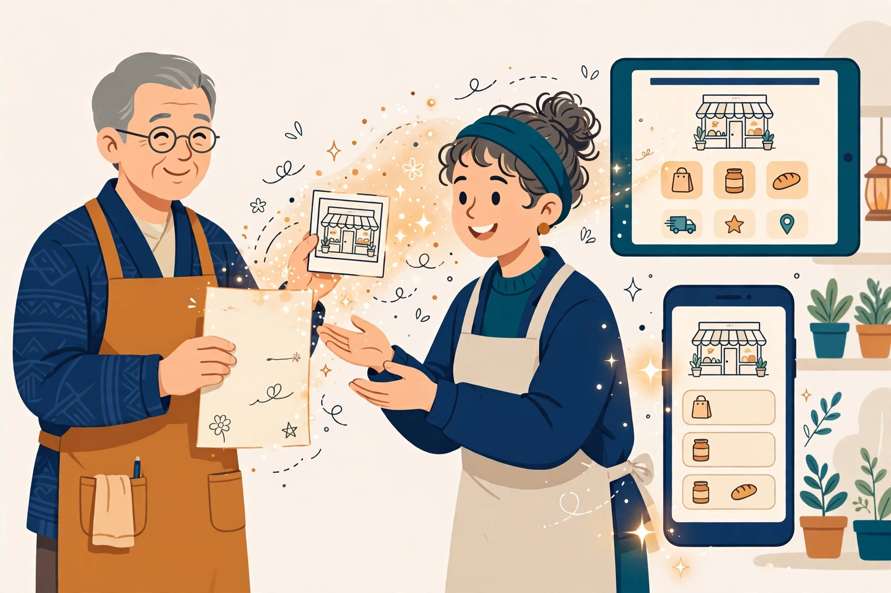
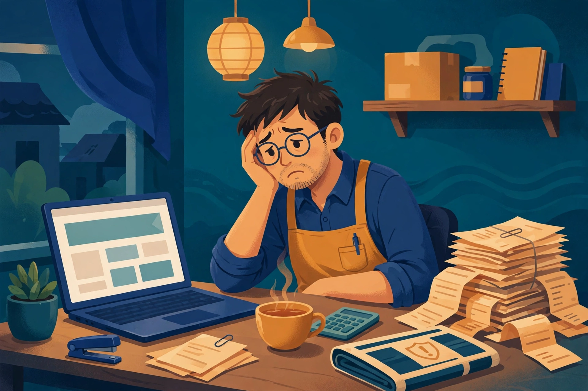
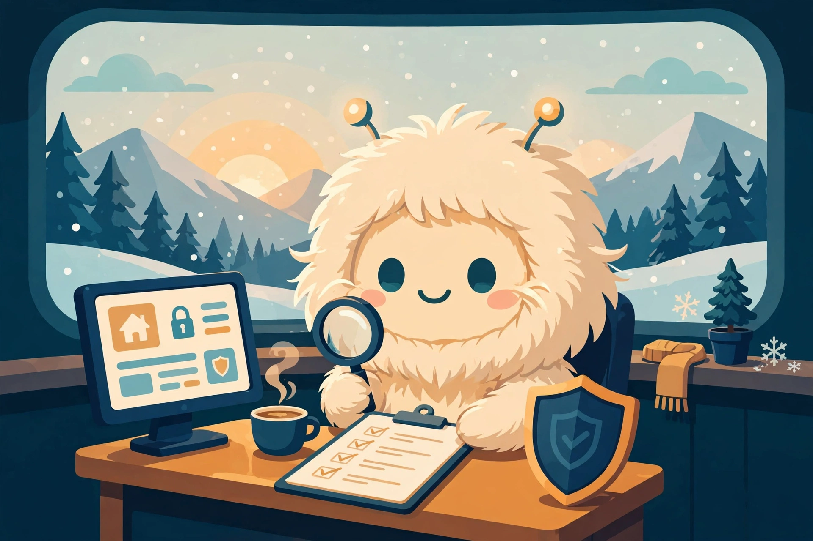
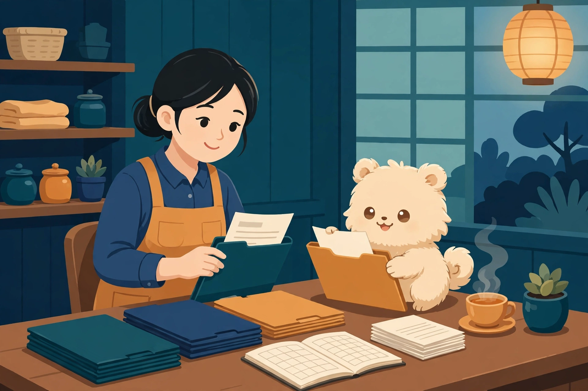

困りごと 1
ホームページが作れない・直せない
作りたいけれど何から始めればいいか分からない。作ったけれど、直し方が分からず情報が古いままになっている。
お知らせの文章と写真を用意するだけで、ホームページが新しくなります。 さらに、安全の見守りと領収書や記録の整理といった毎日のこまごました仕事は、 AIのミューズさんがお手伝い。ホームページを「作って終わり」にしないためのパッケージです。

お知らせやメニューなど、伝えたいことをいつもの言葉で書くだけです。
特別な画面の使い方を覚える必要はありません。原稿がそのまま材料になります。
きれいに整ったページが公開されます。スマホでも見やすい形です。
こんなお困りごと、ありませんか
本業が忙しいほど、ホームページや事務仕事は後回しになりがちです。放っておくと困るのに、手をつける時間がない — そんな声に応えるためのパッケージです。

困りごと 1
作りたいけれど何から始めればいいか分からない。作ったけれど、直し方が分からず情報が古いままになっている。
困りごと 2
領収書や日々の記録が少しずつ散らかって、申告の時期にまとめて慌てる。毎年その繰り返しになっている。
困りごと 3
「情報が漏れた」「サイトが書き換えられた」というニュースを見るたび、自分のところは大丈夫か心配になる。でも、何を確認すればいいか分からない。
ホームページの仕組み
このホームページは、原稿を渡すと出来上がったページを置いておく作りになっています。むずかしい仕組みの話は抜きにして、使う側にとっての良さを3つだけ紹介します。
お知らせもメニューも、いつもの言葉で書いた原稿がそのままページになります。原稿は手元に残るので、あとから見返すこともできます。
ページは出来上がった形で置いておくだけで、裏側でプログラムを動かし続けません。動く部分が少ない分、壊れにくく、悪い人に狙われる入口も少なくなります。
出来上がったページをそのまま届けるので、表示は軽快です。お客さんがスマホで開いたときも、待たせません。
毎日のお手伝い
ホームページは、作ったあとの毎日が本番です。その毎日の見守りと整理を担うのが、AIのミューズさんです。といっても、勝手に物事を進めることはありません。大切な変更は、必ず人の確認を挟みます。

毎朝の確認、散らかりがちな記録の整理、やったことの記録づけ。地味だけれど、止まると困る仕事を、毎日同じ手順で続けます。
世の中には、パソコンやホームページの「危ないところ」のお知らせが毎日のように出ています。ミューズさんは、その中から「あなたのところに関係あるもの」だけを選んでお知らせします。直しが必要なときも、確認をいただいてから進めます。
領収書や日々の記録を、普段から少しずつ仕分けして整えておきます。申告の直前にまとめて苦労するのではなく、毎日の小さな整理で本番を軽くします。

安全の見守り
「ニュースを眺めて終わり」ではありません。自分の持ち物を把握するところから、直した記録を残すところまでを、一つの流れにしています。
こんな方に
お役に立てるのは、大きく分けて2タイプの方です。どちらも、ホームページとその周りの仕事を「ちゃんと回る状態」にすることが目的です。
プランのご案内
お店には、まずホームページだけを無理のない形で。始める方・続けている方には、お手伝いまで含めたプランを。WordPressで作ったホームページからの載せ替えも、プランとして用意しています。料金と開始時期は、現在準備中です。
実績のご紹介
この仕組みは思いつきの企画ではなく、実際のサイト運営の中で育ててきたものです。
運営中のページや記事の数（2026年11月時点）。地域のお店やグルメの案内、読み物サイトなど、いくつものサイトをこの仕組みで運営しています。
安全の見比べを続けています。持ち物の一覧と新しいお知らせを毎朝照らし合わせ、関係あるものだけを拾う見守りを継続中です。その様子は「CVE見張り台」で公開しています。
大切な変更は、必ず人の確認を挟みます。ミューズさんが担うのは見守りと下準備まで。決めるのは人、という線引きを守っています。
書くだけで更新できるホームページと、毎朝の見守り、領収書の整理のお手伝い。受付の準備が整い次第、こちらでご案内します。
● 現在、受付の準備中です料金・開始時期についても、決まり次第このページでお知らせします。